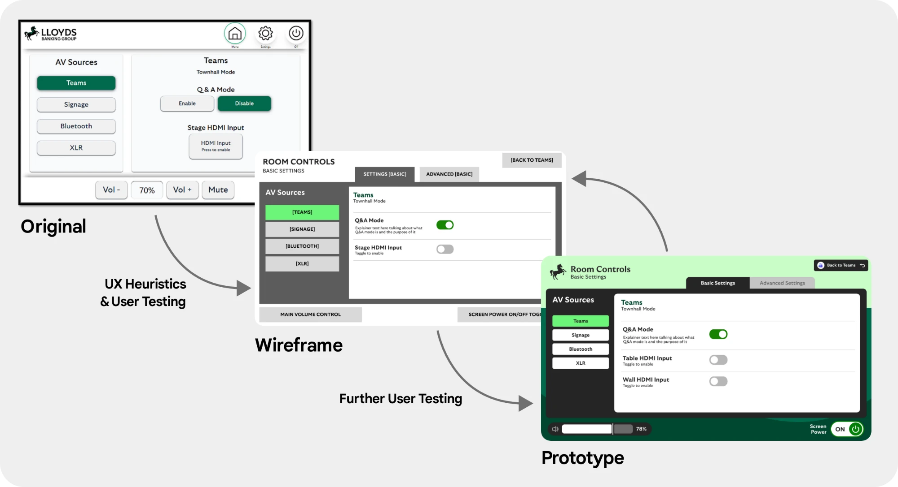
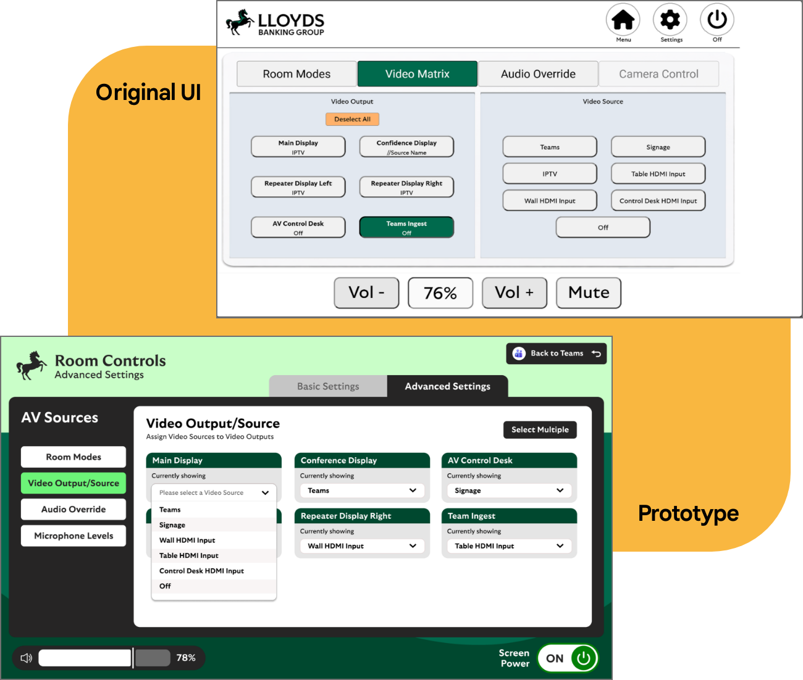
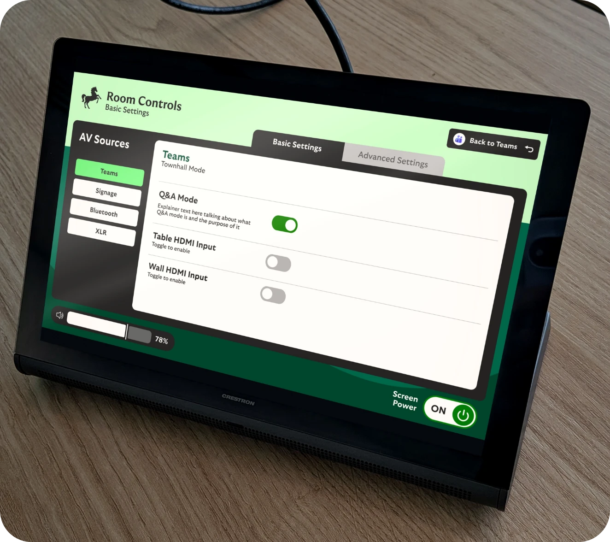

Events UI Panel
Research, Heuristic Evaluation, User Testing, UX Design, UI Design, Wireframes, Prototyping
The existing Events Panel supported AV controls across event spaces but usability observations highlighted excessive cognitive effort, weak visual hierarchy and difficulty quickly identifying relevant controls.
The Plan
Improve the usability and consistency of the touchscreen interface, making complex AV functionality simpler and more intuitive for users.

The Process
I conducted a heuristic evaluation across five UX categories on the original User Interface combined with User Testing. Based on the analysis of the feedback and UX Pain Points I then developed multiple Figma wireframes and usability tested them against the existing design.
It was vital to ensure there was in-person testing due to the nature of the UI featuring a touch screen. Certain pain points could only be identified through user interaction.
Next, I produced a high-fidelity prototype introducing clearer states, toggles, sliders and redesigned Video Matrix and camera-control experiences, while working with developers to consider feasibility and implementation.

Result
Initial user testing indicated significant improvements in usability, reduced confusion and frustration, and simpler task completion. The redesigned experience subsequently progressed into development, with further touchscreen and in-person testing before further updates and eventual roll out of the new version.